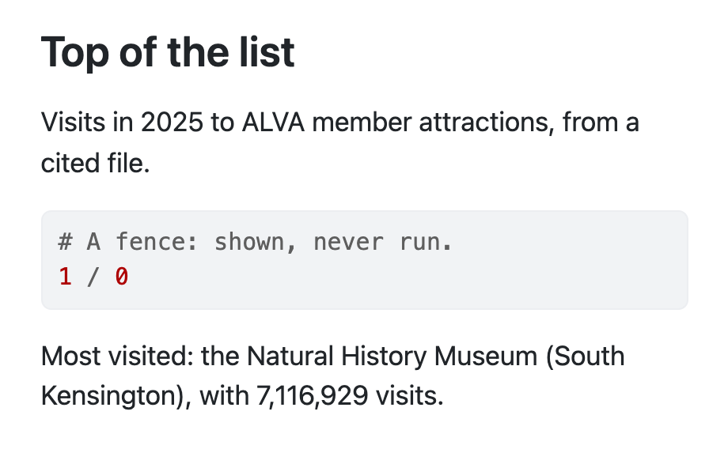
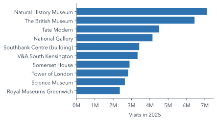
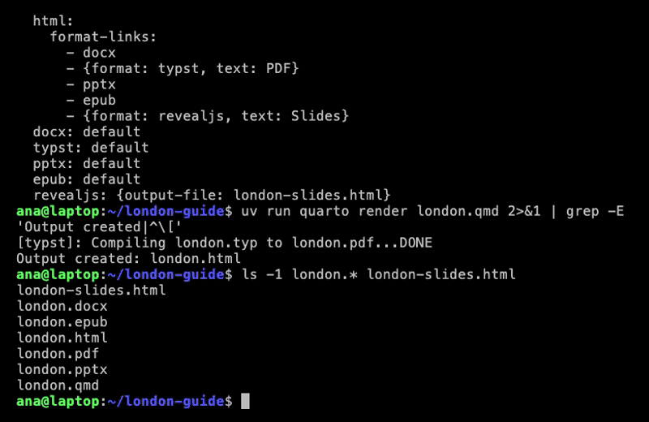

---
title: "Top of the list"
format: html
---
Visits in 2025 to ALVA member
attractions, from a cited file.
```python
# A fence: shown, never run.
1 / 0
```
```{python}
#| label: top-attraction
#| echo: false
import pandas as pd
att = pd.read_csv(
"data/attractions.csv")
top = att.loc[
att["visits_2025"].idxmax()]
visits = f"{top['visits_2025']:,}"
```
Most visited: the
`{python} top["attraction"]`,
with `{python} visits` visits.5 Documents That Compute
Keywords
Quarto, reproducible publishing, coding assistants, Markdown, Python, EPUB, data analysis, k-means clustering
In 2024, by ALVA’s count, the most visited of the guide’s five sights was the British Museum, with 6,479,952 visits; in 2025, the Natural History Museum, with 7,116,929. A guide that said, in typed words, that the British Museum is the most visited of the five went on saying it after ALVA published its 2025 table, in every copy, until someone noticed.
This chapter makes the guide compute instead. Code reads the data at every render, so a new table corrects every sentence, the chart drawn from it and the Word and PDF versions at once, without a single number copied by hand. That is the workflow’s central promise, and the rest of the book builds on it.
In this chapter
- Write front matter that sets the title block and the formats.
- Tell a code cell that runs from a fence that is only shown, and explain how inline code puts a computed number in a sentence.
- Label, caption and describe a figure with cell options.
- Render one source to HTML, Word and PDF, and say why renders collide.
5.1 The anatomy of a .qmd file
A Markdown file can only say what you typed into it. A Quarto document, a .qmd file, can also compute what it says, so before the guide becomes one, here are the parts of one. Section 1.2 showed hello.qmd, the test run’s file, which multiplies two numbers. toy.qmd has the same parts, and reads the guide’s own data file, so its numbers are real:
From the top:
- Front matter. The block between the two
---lines at the very top holds the document’s settings, written in YAML, a format for settings in which indentation is meaning: a nested setting is indented by two spaces, and a wrong indent changes what it belongs to.titlegives the page its title andformatchooses the output. - Markdown. Everything outside the fences is the Markdown of Section 4.1.
- A fence that is only shown.
```pythonnames a language, so the code is coloured as Python, but Quarto never runs it. If it did,1 / 0would stop the render. - A code cell.
```{python}, with the language in braces, is a fence whose code runs when the document renders. Its first lines, starting#|, are cell options:labelnames the cell, andecho: falsehides its code from the page. - Inline code.
`{python} visits`runsvisitsand writes its value into the sentence, so the number in the sentence is computed, not typed.
The braces are the whole difference, as Table 5.1 sets out.
.qmd file.
| You write | Quarto |
|---|---|
```python fence |
shows the code; never runs it |
```{python} cell |
runs it; shows the output, and the code unless echo: false |
`{python} visits` |
runs visits; writes its value into the sentence |
```{=typst} raw block |
passes it to Typst untouched; other formats leave it out (Section 6.4) |
quarto render toy.qmd makes Figure 5.1. The title comes from the front matter. The fence is there, 1 / 0 and all. The cell is not, because echo: false hid it, but its work is: the sentence names the Natural History Museum (South Kensington), with 7,116,929 visits, read from the file at the moment the page was rendered.

quarto render toy.qmd makes of the file, at a phone’s width: a screenshot of toy.html as Quarto 1.10.20 renders it.
Pause and think
You put braces round the fence’s language, so that it reads ```{python}, and render toy.qmd again. What happens?
Answer
The render stops. The fence is now a cell, so Quarto runs 1 / 0, Python raises a ZeroDivisionError, and no toy.html is written. The failure is in the first step, execute (Figure 1.2): your code, not the document.
5.2 Settings at the top: the title block
Ask your coding assistant
Rename london.md to london.qmd. Replace the "# Visit London" heading with YAML front matter: title "Visit London", author "London Tourism Office", date today, format html. Do not render; my preview rebuilds it.
Expect it to run
renames to london.qmd · edits the top of the file
You do
in the preview tab: Ctrl+C, then uv run quarto preview london.qmd
The .qmd extension tells Quarto to look for front matter and code cells (Section 5.1). The guide’s front matter is four settings:
- 1
-
title,authoranddatemake the title block, so the old# Visit Londonheading is no longer needed. - 2
-
todayis filled in when the document is rendered. - 3
-
formatchooses the output; later in this chapter it becomes a list.
The page in the preview now opens with the title, the author and today’s date.
WarningCommon pitfall
Delete london.md once london.qmd exists. Both would write london.html, and the one rendered last wins, so the page you see may not come from the file you edited. Restart the preview on the new file, too: the old one is still watching london.md.
5.3 Numbers the guide computes
Ask your coding assistant
In london.qmd, add a Python cell that reads data/attractions.csv and finds the most visited attraction and total visits_2025, plus a sentence showing both with inline code. The preview re-renders it: check london.html.The assistant writes a code cell (Section 5.1) and a sentence that uses its results:
```{python}
import pandas as pd
attractions = pd.read_csv("data/attractions.csv")
top = attractions.loc[attractions["visits_2025"].idxmax()]
top_name = top["attraction"]
top_visits = f"{top['visits_2025']:,}"
total_visits = f"{attractions['visits_2025'].sum():,}"
```
Most visited in 2025: the `{python} top_name`, with `{python} top_visits` visits.
London's ten most visited ALVA member attractions drew `{python} total_visits` visits.You do not need to write Python to check it, but you should be able to read it. The cell does four things:
import pandas as pdloads pandas, the package for tables, under the short namepd.pd.read_csv(...)reads the CSV file into a table,attractions, one row per attraction.attractions["visits_2025"].idxmax()finds the row with the most visits in 2025, and.loc[…]takes that row, sotop["attraction"]is its name..sum()adds up the column, andf"{…:,}"writes a number as text with a comma between the thousands, ready for a sentence.
When the document renders, the cell runs and its variables are kept, so each piece of inline code, `{python} name`, is replaced by the value of name. Rendered in this book from the same data file, the sentence reads:
Most visited in 2025: the Natural History Museum (South Kensington), with 7,116,929 visits. London’s ten most visited ALVA member attractions drew 39,692,434 visits.
Quarto 1.4 introduced this inline syntax, one for every engine, Python included; R users already wrote inline code with knitr’s `r x`, a syntax Quarto still supports (Quarto 1.4 release notes, checked 2026-11-12).
Pause and think
If attractions.csv changes, which values in those two sentences update?
Answer
The three that are computed: the top attraction’s name, its visits and the total. They update at the next render, not when the file is saved. The word “ten” is typed, so it never updates: it is right only while the file holds ten rows, and len(attractions) would compute it. Anything typed by hand behaves the same way.
The figures come from ALVA’s table of visits made in 2025 to its member attractions, retrieved on 2026-10-30. Only ALVA’s members are counted, which is why the sentence says “ALVA member attractions”: the project’s rules made the assistant write it that way.
5.4 A chart with a caption and alt text
Ask your coding assistant
Add a matplotlib cell: a horizontal bar chart of visits_2025 by attraction. Hide its code, label it fig-top10, add a caption and alt text. The preview re-renders it: check london.html.A cell’s options go in its first lines, as comments that start with #|, like the label and echo of toy.qmd (Section 5.1):
- 1
-
A label starting
fig-numbers the figure and lets the text refer to it as@fig-top10, which renders as “Figure 1” with a link. - 2
-
echo: falsehides the code; readers of a visitor guide want the chart, not the Python. - 3
- The caption, shown under the figure.
- 4
- The alt text, read aloud by screen readers.
Figure 5.2 is that chart, drawn by this book from the same file. Notice that its caption and alt text describe different things: the caption says what the chart is, the alt text says what it shows.

Matplotlib draws a static image, so the same figure travels to every format: web page, Word, PDF, slides. Interactive charts, such as Plotly’s, are JavaScript that runs in a browser, so they belong in web pages and dashboards (Chapter 6) and not in a PDF.
5.5 One source, three formats
You do
first: Ctrl+C in the preview tab, so that two renders do not collide · restart it afterwards
Ask your coding assistant
In london.qmd, add docx and typst (label "PDF") formats with download links on the HTML page. Render all three; check each has the computed sentence and chart.
Expect it to run
uv run quarto render london.qmd → london.html · london.docx · london.pdf
The front matter’s format becomes a list:
- 1
-
format-linksadds a download link to the web page for each other format listed. - 2
- An entry can be a format name, or an object with the format and the link’s text.
- 3
-
typstmakes the PDF with the Typst engine inside Quarto; no LaTeX is involved.
One quarto render now writes three files. Each format runs the code cells again, so the inline numbers and the figure appear in every file without anything being copied. To render only one format, add --to docx (or --to typst). Each format is one more pass through the steps of Figure 1.2. When you restart the preview, the web page has a list of Other Formats in its margin, with a link to each file; open the Word file and the PDF from there.
NoteWhy this works
Why render the code once per format? Because a format can change what code produces: a figure may be drawn at a different size or resolution, and some outputs, such as interactive charts, only make sense in HTML. Re-running is the price of each format getting output made for it. For a slow analysis, the cure is to compute once in a script and have every format read the results, which is exactly how Part III is built (Section 8.6).
Pause and think
The bar chart has to appear in the Word file and the PDF as well as the web page. Why does its prompt ask for matplotlib, when the next chapter’s dashboard uses Plotly?
Answer
Matplotlib draws a static image, which every format can hold. Plotly’s charts are JavaScript that runs in a browser, so they suit the web page and the dashboard but not Word or a PDF.
5.6 Three more formats (optional)
Ask your coding assistant
In london.qmd, add pptx, epub and revealjs (london-slides.html) formats, each with a download link on the HTML page. Render all; check each has the computed sentence and chart.
Expect it to run
uv run quarto render london.qmd → six files
format:
html:
format-links:
# … docx, PDF
- pptx
- epub
- {format: revealjs, text: Slides}
pptx: default
epub: default
1 revealjs: {output-file: london-slides.html}- 1
-
Reveal.js slides are also HTML, so they need their own file name, or they would overwrite
london.html.
In PowerPoint and Reveal.js, each ## heading becomes a slide. The EPUB is an e-book: open it in an e-book reader such as Calibre (free, for Windows, macOS and Linux) or Books on a Mac. This book’s EPUB edition is built the same way, with more settings, which Appendix H describes. Figure 5.3 shows the render.

format list in london.qmd, a render that runs the code once per format, and the outputs it wrote. A real recording with a demo account; the middle of the render is cut.
5.7 What a render does, and why two renders collide
Figure 1.2 in Section 1.2 showed the three steps of a render. With code in the document, the first step is worth looking at more closely, because it explains the commonest failure of this chapter.
To run the cells, Quarto writes the document out as a temporary Jupyter notebook, named after the file (london.quarto_ipynb), starts a Python kernel (a running Python process) from the project’s environment, sends it each cell in order, and collects the results. Two consequences follow. The cells share one Python session, top to bottom, so a later cell can use a variable from an earlier one, and the order of cells matters. And two renders of the same file at the same moment write the same temporary files, which is why a render started while a preview is re-rendering fails with readfile 'london.quarto_ipynb'.
Every render runs every cell again. That is Quarto’s default (freeze: false), and this book’s projects keep it deliberately, so outputs always match the data. It also means a slow cell slows every render; Chapter 14 returns to the trade-off and to freeze: auto, which caches results and needs a rule for when to throw them away.
Each render also prints the harmless IPKernelApp warning described in Section 3.7.
Pause and think
A later cell uses attractions, which an earlier cell creates. You move the later cell above the earlier one. What happens at the next render?
Answer
It fails with a NameError: the cells run top to bottom in one Python session, so attractions does not exist yet when the moved cell runs.
Summary
- A
.qmdfile is YAML front matter, Markdown and code cells; only a fence whose language is in braces runs. - Cells run at render time, top to bottom, in one Python session.
- Inline code puts results in sentences, so they follow the data; typed words do not.
- The caption says what a figure is, the alt text what it shows.
- Each format re-runs the code, and two renders of one file at once collide.
Every one of those formats is still the visitor’s guide, though. The tourism office has other readers (managers, partners and people who walk in off the street), and the next chapter writes a document for each of them at once.
Further reading
- Quarto, Front Matter and Execution Options (checked 2026-11-12).
- Quarto, Inline Code and the 1.4 release notes (checked 2026-10-30 and 2026-11-12).
- Quarto, Cross References (checked 2026-11-12).
- Quarto, HTML with multiple formats, Typst, PowerPoint, Reveal.js and EPUB options (checked 2026-10-30 and 2026-11-12).
- Quarto, Jupyter Widgets: when interactive charts work (checked 2026-10-30).